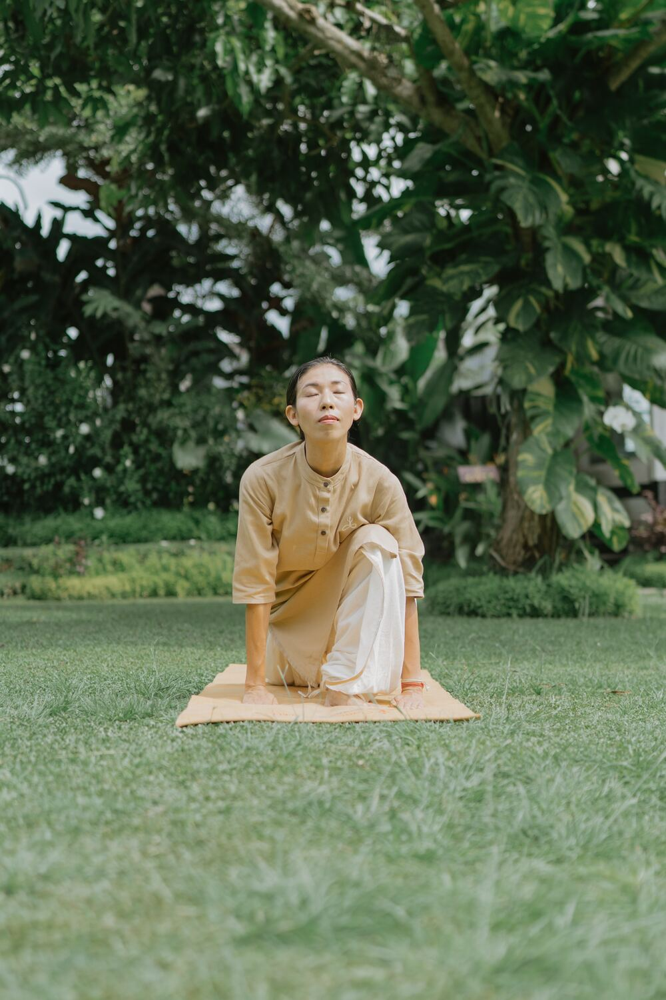

講師紹介
秦 節子｜Setsuko Hata
サドグル公認ハタヨガ講師

私は幼い頃から好奇心旺盛で、新しいことに挑戦することが大好きな性格でした。特に歌うことが好きで、一度夢中になると納得するまでとことん追求し、何事にも全力で取り組むタイプでした。
しかし、その真面目さや頑張りすぎる気質から、自分の限界を超えて無理を重ねる生活が続き、心身のバランスを崩してしまいました。21歳の頃、自律神経の不調をきっかけにうつ病と躁病を発症し、大学を3年間休学。入院を含む闘病生活を送りました。
心も体も思うようにならない日々の中で、「本当の健康とは何か」「人が本来持つ生命の可能性を最大限に引き出すには、どうすればよいのか」——その問いを、私はずっと探し続けてきました。
やがて回復し、大学へ復学。2011年に大阪市立大学生活科学部食品栄養学科を卒業しました。その後、幼き頃からの夢だったプロの歌手になるためにアメリカへ渡り、ニューヨーク市立大学(CUNY)と北コロラド大学大学院で本格的にジャズボーカルと作曲を専攻。13年間、アメリカでプロのジャズシンガー・作曲家として活動してきました。
音楽活動を続けながらも、あの問いは私の中に生き続けていました。心身を深く癒し、本当の健康を取り戻したい。そしてその先で、生命そのものの可能性をどこまで切り開いていけるのか——その答えを求めて、私はさまざまな道を探求してきました。
仏教哲学に学び実践し、ヨガやピラティス、ジャイロトニック、セラピー、ハーブ療法、エネルギーヒーリング、潜在意識のリプログラミングなど、心と体、そして意識に働きかけるあらゆる方法を、自分自身で試し続けてきたのです。どれもそれなりの効果はありましたが、生命そのものが根本から変わるという実感には、まだ至りませんでした。
そんなある日、YouTubeで世界的なヨギ・サドグルの動画に出会います。何気なく試したサドグルの瞑想がもたらす心身への効果があまりに素晴らしく、そこからロサンゼルスでサドグルのプログラム「インナーエンジニアリング」やハタヨガを受講。実践を重ねるうちに、自分の生命が驚くほど健やかに変わっていくことを実感しました。
これまでの人生にないほどの深い経験でした。この生命の可能性をもっと追求したい——その思いが強くなり、ヨガと瞑想の修行のためインドへ渡ることを決意します。
2024年、サドグルによって設立された南インドのIsha Yoga Centerへ渡り、約1年半にわたりアシュラムで生活しながらヨガと瞑想を学び、本場インドでも最も厳格なヨガ教師養成プログラムの一つといわれるハタヨガ教師養成コースを修了しました。1,750時間以上に及ぶ専門的なハタヨガ講師トレーニングを積み、サドグル公認ハタヨガ講師の資格を取得しました。
現在、日本ではわずか4名のサドグル公認ハタヨガ講師の一人として、本場インドで受け継がれてきた伝統的なハタヨガを、大阪・東京を中心にお伝えしています。

私自身の人生を変えた、ヨガの力
ハタヨガを日々実践することでまず、身体が変わりました。長年抱えていた慢性的な不調が自然と改善し、生命エネルギーが高まるにつれて驚くほど疲れにくくなりました。朝目覚めることが楽しみになり、一日一日を生きることそのものに喜びを感じられるようになりました。
身体が整うと同時に、心も大きく変化しました。以前はストレスや不安に振り回されることもありましたが、ハタヨガを継続する中で、どのような状況でも穏やかさを保てるようになり、外側の出来事に左右されることが少なくなりました。
そして何より大きく変わったのは、生きることへの向き合い方です。以前の私は、成果や評価の中に幸せを求めていました。しかし今は、ただ生きていること、存在していることそのものに、深い喜びと感謝を感じられるようになりました。生命という奇跡に心から感動し、何気ない日常さえ愛おしく感じています。
その結果、挑戦することへの恐れもなくなりました。成功を目指して全力を尽くしますが、結果によって自分の幸せが左右されることはありません。成功しても失敗しても、自分の内側には揺るがない安らぎがある。そのような生き方を実感できるようになりました。
この変化は特別な才能によるものではなく、本格的なハタヨガの実践を通して、身体・心・生命エネルギーが本来の調和を取り戻した結果だと感じています。
私自身の人生が根本から変わったからこそ、この素晴らしいヨガ科学を一人でも多くの方へ届けたいという思いで、ハタヨガ講師の道を選びました。
一人ひとりが心身ともに健やかに、自分らしく生きることのできる社会を育んでいくこと。それが、私の願いであり、人生の使命です。
秦節子